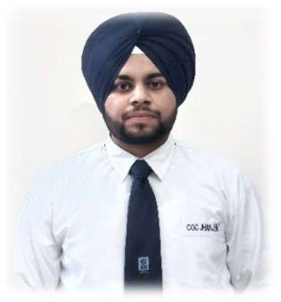

Tejinder Singh

Summary
Current student looking forward to join the workforce to gain real world experience. Ability to tasks to complete tasks on time on both individual and team settings. Dependable and reliable, ready to learn and grow with your company.
Education
- BCA,Chandigarh Group of Colleges,Jhanjeri
2020-2023
- • Pursuing Bachelor of Technology in Computer Applications from Chandigarh Group of Colleges, Jhanjeri Affiliated from IKGPTU University, Punjab with an aggregate of 8.5 CGPA (till 5th Semester)
- 12th Standard,Mata Sahib Kaur Senior Secondary School, Sawara
2020 Passout
- • 12th from CBSE Board with 80% in Year 2020
Skills
- HTML
- Javascript Basic
- Php Basic
- Java core , OOPS
- MS Office
- MS Word
- MS Powerpoint
- Active listening
- Teamwork
- Leadership
- Dependable and reliable
- Adaptability
Work Experience
- Technical Recruiter, MWIDM
Sep 2022 - Jun 2023- As a Technical Recruiter, I have had the opportunity to work in a dynamic and fast-paced environment, connecting talented professionals with exciting career opportunities in the technology industry. My role has involved sourcing, screening, and arranging interviews with clients’ candidates, as well as managing the end-to-end recruitment process.
- My role involved collaborating with hiring managers and HR teams to understand their staffing needs and develop effective recruitment strategies.
- I utilized various platforms, such as job boards, professional networks, and social media, to reach a wide pool of potential candidates.
Additional Information
- Languages known-
- English
- Punjabi (Native)
- Hind
Other Information
Contact Me